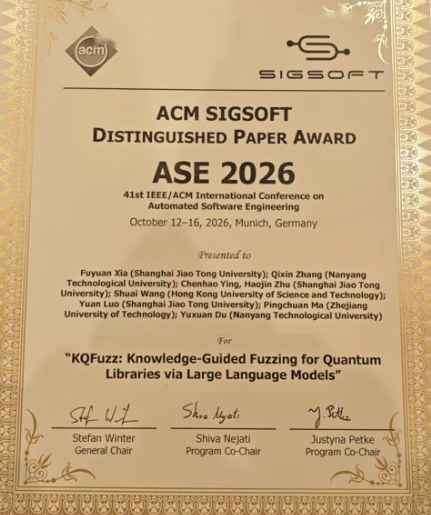

OmniQST is the software-trust channel of OMNI: autonomous testing, verification, and diagnosis for quantum libraries, compilers, simulators, and research workflows.
Quantum libraries are now critical infrastructure for quantum algorithm development, and a bug in them can quietly propagate into experimental conclusions. OmniQST builds AI agents that test this software autonomously: they generate programs, expose defects and confirm them with executable tests.
The QID Lab’s first quantum software engineering paper received an ACM SIGSOFT Distinguished Paper Award at ASE 2026, the 41st IEEE/ACM International Conference on Automated Software Engineering (Munich, 12–16 October 2026).
About KQFuzz →
Knowledge-Guided Fuzzing for Quantum Libraries via Large Language Models
Fuyuan Xia, Qixin Zhang, Chenhao Ying, Haojin Zhu, Shuai Wang, Yuan Luo, Pingchuan Ma, Yuxuan Du
As quantum computing advances, the reliability and correctness of quantum libraries such as Qiskit, PennyLane and Cirq become increasingly critical. Fuzzing them with large language models is a natural approach, but existing LLM-based fuzzers still suffer from insufficient flexibility and low efficiency.
KQFuzz grounds LLM-generated tests in knowledge drawn from the library’s own codebase. A prompting scheme designed for quantum programs produces seed programs; fitness-guided evaluation and two-level mutations then drive testing toward complex execution paths and more diverse test cases.
Detecting Silent Bugs in Quantum Libraries via Quantum-knowledge-enhanced Agents
Yujin Song, Kaining Zhang, Qixin Zhang, Shuai Wang, Pingchuan Ma, Yuxuan Du
Quantum libraries are now critical infrastructure for quantum algorithm development. Existing testing techniques rely on failure-based or comparison-based oracles, so they expose a bug only when an execution fails, violates a runtime check or disagrees with another implementation. Silent bugs pass all three, yet they can produce incorrect results that propagate into experimental conclusions.
QuSema is an autonomous testing agent that uses quantum semantics and API documentation as its oracle. In an agentic loop it reviews documentation and source code, reasons about the intended behaviour, and generates executable tests that confirm suspected defects.